Портал продавця
Повний посібник з вебпорталу FindMyFlowers Business за адресою vendors.findmyflowers.pl для власників квіткових крамниць і флористів-фрилансерів: реєстрація, панель, букети, розумні вази й стан з’єднання наживо, замовлення, склад, платежі, аналітика, оплата й налаштування.
Вхід
Вхід
Перейдіть на vendors.findmyflowers.pl, введіть ім’я користувача й пароль продавця та натисніть Вхід. Скористайтеся Забули пароль? , щоб скинути пароль, або Створити обліковий запис продавця , щоб зареєструватися. Той самий обліковий запис працює в мобільному застосунку FindMyFlowers Business.
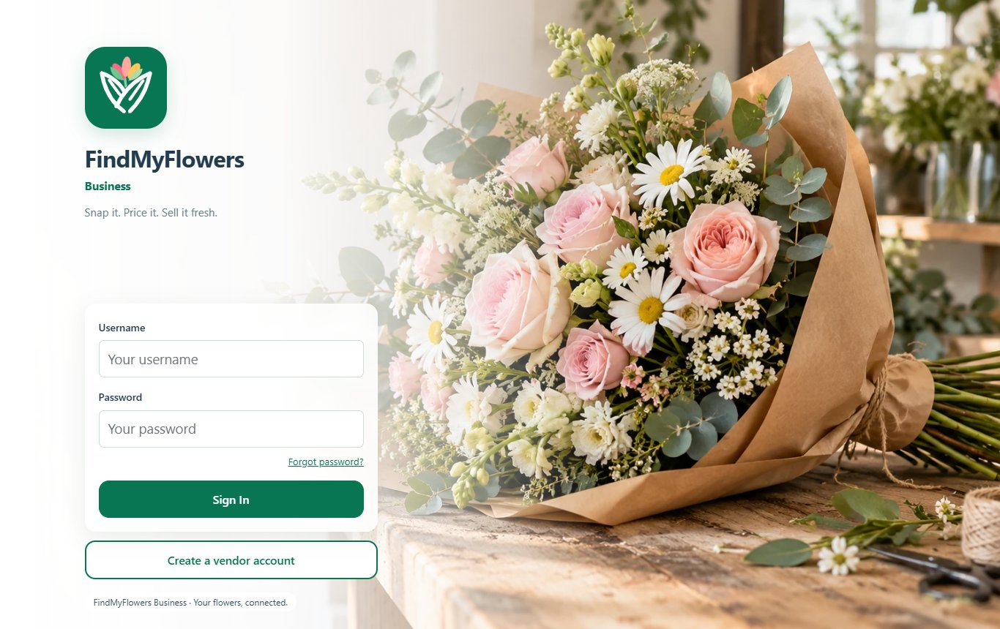
Скидання пароля
Введіть ел. пошту свого облікового запису й натисніть Надіслати посилання для скидання. Посилання для скидання пароля надійде на вашу пошту. Назад до входу повертає на сторінку входу.
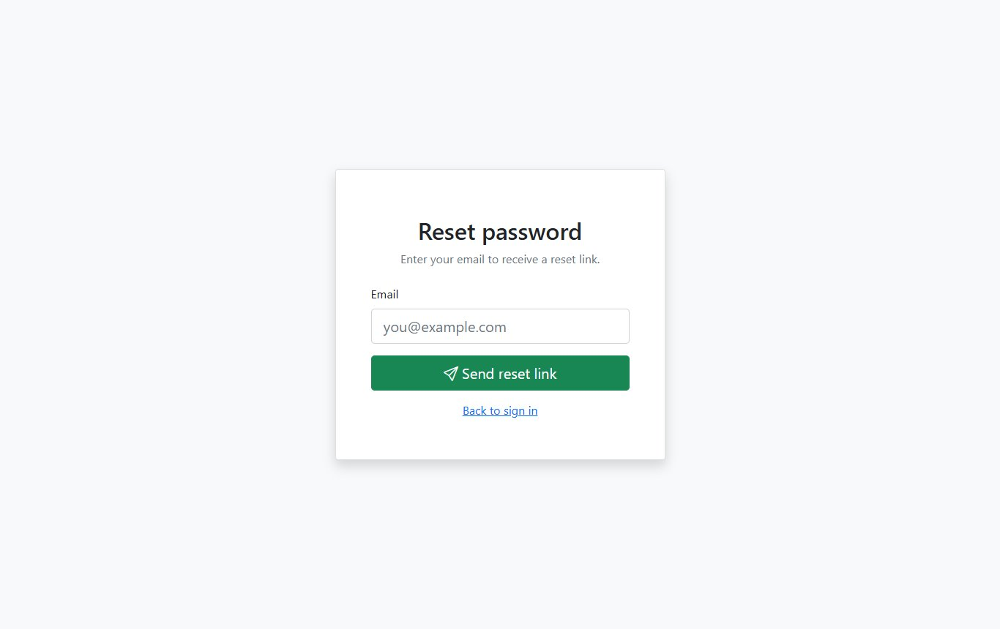
Реєстрація облікового запису (самостійна)
Створіть обліковий запис продавця
Майстер із чотирьох кроків запускає 14-денний безкоштовний пробний період без оплати до його завершення.
1. Компанія: тип продавця (традиційна квіткова крамниця або флорист-фрилансер), назва компанії, опис, контактні ел. пошта й телефон та адреса крамниці з координатами на мапі. 2. Оплата: платіжна адреса для рахунків. 3. Оплата: необов’язкова картка, яку надійно зберігає Stripe (можна пропустити й додати пізніше в розділі «Оплата»). 4. Підтвердження: оберіть ім’я користувача й пароль, прийміть умови користування та політику конфіденційності й натисніть Створити обліковий запис і почати пробний період.
Ви одразу входите в систему. Продавці, що зареєструвалися самі, можуть залишатися в стані очікує схвалення , доки адміністратор платформи не схвалить обліковий запис; тим часом можна налаштовувати крамницю.
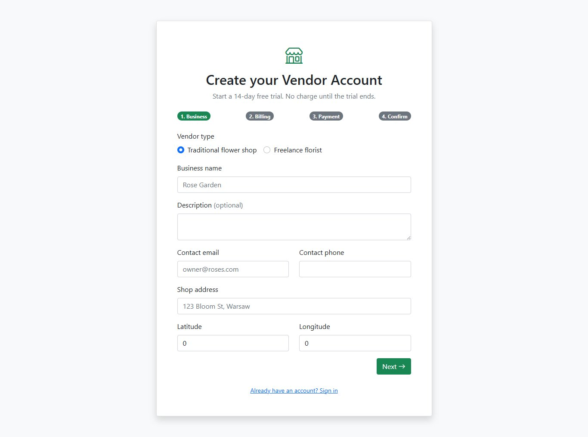
Панель
Огляд панелі
Після входу ви бачите З поверненням, {ваша компанія} з трьома плитками: Вази онлайн (вази, що надіслали сигнал за останні п’ять хвилин, з усіх зареєстрованих), Доступні букети і Замовлення в очікуванні.
Потребує вашої уваги збирає те, чим треба зайнятися: Пристрої офлайн (Перевірити пристрої), позиції складу, яких мало або немає (Перевірити склад) і пропозиції цін за свіжістю (Переглянути ціни). Нижче — Остання активність букетів і Мої вази з міткою з’єднання наживо для кожної вази.
Ліва бічна панель відкриває кожен розділ: Панель, Мої букети, Мої вази, Замовлення, Склад, Платежі, Оплата, Відгуки, Аналітика й Налаштування, а внизу — Зв’язатися з нами і Вийти . На екрані телефона панель стає нижнім рядком зі сторінкою Більше .
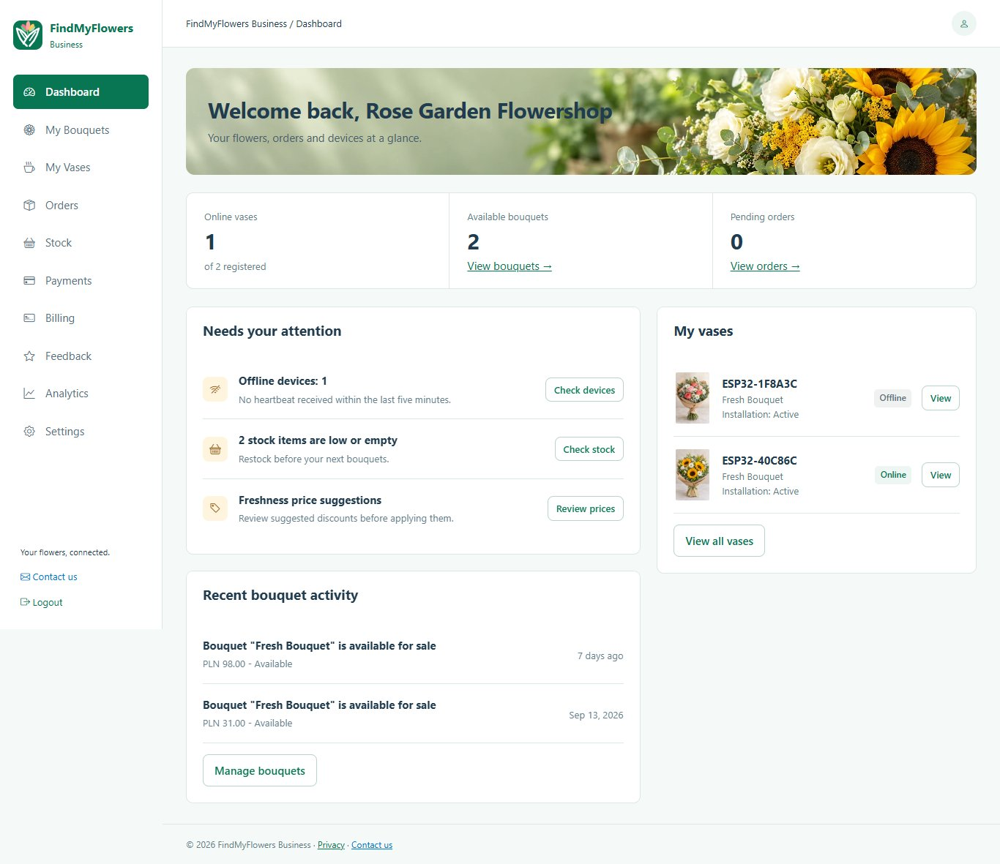
Керування букетами
Мої букети
Показує всі букети картками з фото, назвою, ціною, доступністю, оцінкою свіжості й датою. Шукайте за назвою, фільтруйте через Усі / Доступні, й дивіться підсумки (Усі, Доступні, Чернетки) внизу.
Коли букет виставлено вже якийсь час, бурштинова Пропозиція за свіжістю пропонує нижчу ціну (наприклад Зменшити до 9,30 zł, −70% через 72 год). Натисніть Прийняти , щоб застосувати її одним кліком, або проігноруйте.
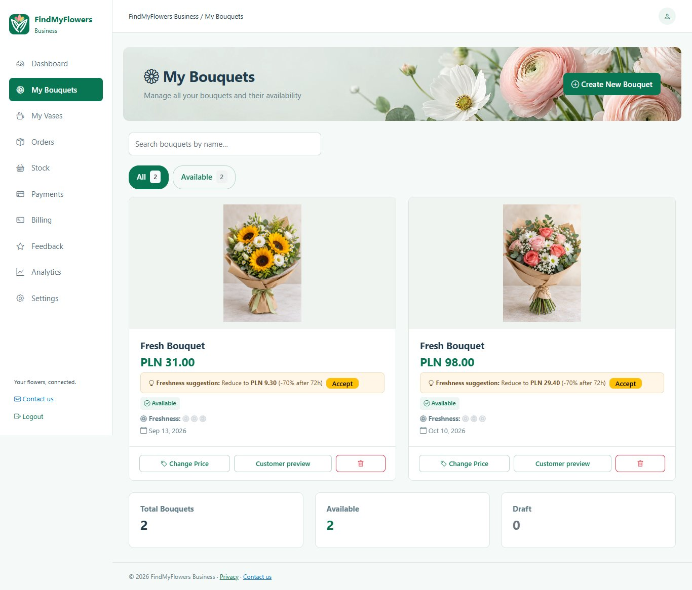
Створити новий букет
Натисніть Створити новий букет й оберіть вазу, у якій стоїть букет (Створити тут). Сторінка вази відкриється в режимі завантаження: завантажте фото, а потім установіть ціну, щоб букет став доступним для клієнтів.
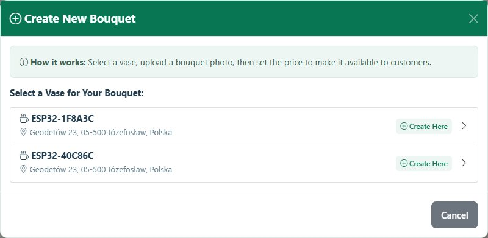
Установити / змінити ціну й оцінку свіжості
Змінити ціну відкриває вікно ціни. Введіть ціну в злотих і оберіть Оцінка свіжості: Не показувати, або 1–3 квіточки — кількість днів, протягом яких букет гарантовано свіжий. Клієнти бачать це як квіточки на мапі; щодня кількість зменшується на одну, а ціна не змінюється.
Натисніть Установити ціну , щоб зберегти. Букет без ціни стає доступним для покупки після встановлення ціни.
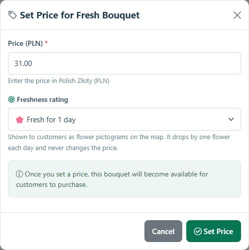
Перегляд для клієнта
Перегляд для клієнта показує букет так, як його бачать клієнти: фото, назва, ціна, доступність і свіжість.
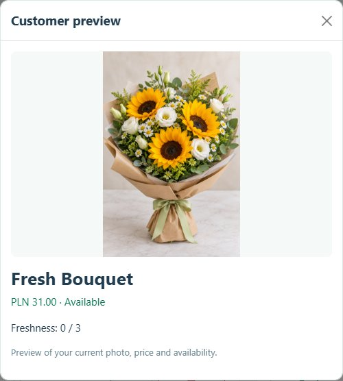
Видалити букет
Червона кнопка кошика просить підтвердження перед видаленням букета. Видалення не можна скасувати.
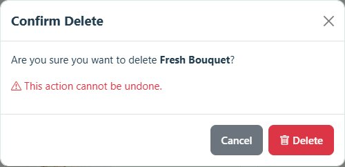
Керування розумними вазами
Мої розумні вази
Плитки рахують вази Онлайн, Офлайн і Усього зареєстровано . Таблиця показує кожен пристрій із розташуванням, станом встановлення, міткою З’єднання , поточним букетом, останнім сигналом (UTC) і діями: Переглянути деталі і + (створити букет у цій вазі).
Стан з’єднання оновлюється наживо, поки сторінка відкрита: ваза Онлайн , якщо надіслала сигнал за останні п’ять хвилин, інакше Офлайн, а коли ваза переходить в офлайн чи повертається, з’являється сповіщення. Скористайтеся Замовити нові вази і Мої замовлення ваз для замовлень обладнання.
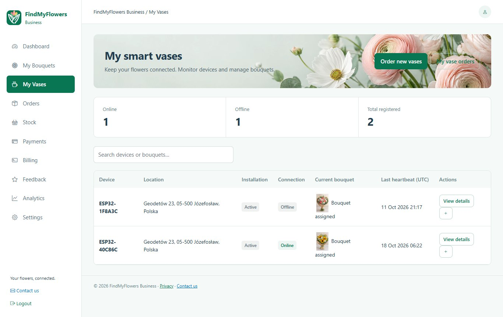
Деталі вази — ваза онлайн
Інформація про пристрій показує ID пристрою, стан встановлення, стан, з’єднання й останній сигнал. Дані з датчиків показують температуру, вологість, стан і ціну букета, скільки часу він доступний і останнє оновлення. Розташування вази показує адресу й координати. Праворуч Поточний букет показує фото, яке бачать клієнти, і дозволяє завантажити нове (JPG, PNG або GIF, макс. 5 МБ).
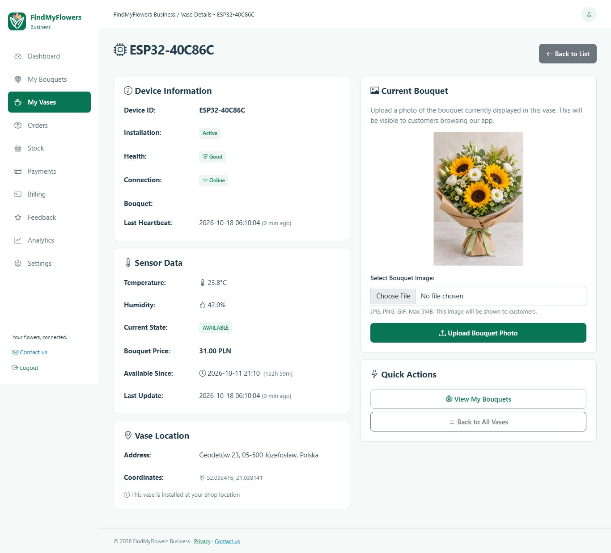
Деталі вази — ваза офлайн
Ваза офлайн показує Стан: критичний, З’єднання: офлайн і скільки часу минуло від останнього сигналу. Попередження каже, що останні показники можуть бути застарілими. Перш ніж діяти, перевірте живлення пристрою й Wi-Fi.
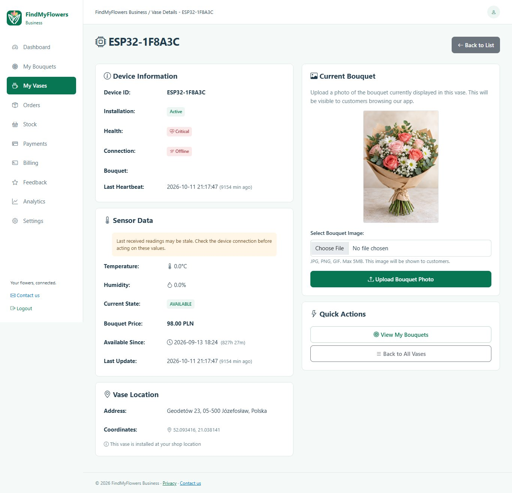
Завантажити нове фото букета
Відкривається з Створити новий букет або кнопкою + . Оберіть фото букета й натисніть Завантажити фото букета; потім установіть ціну в «Моїх букетах», щоб зробити його доступним для клієнтів.
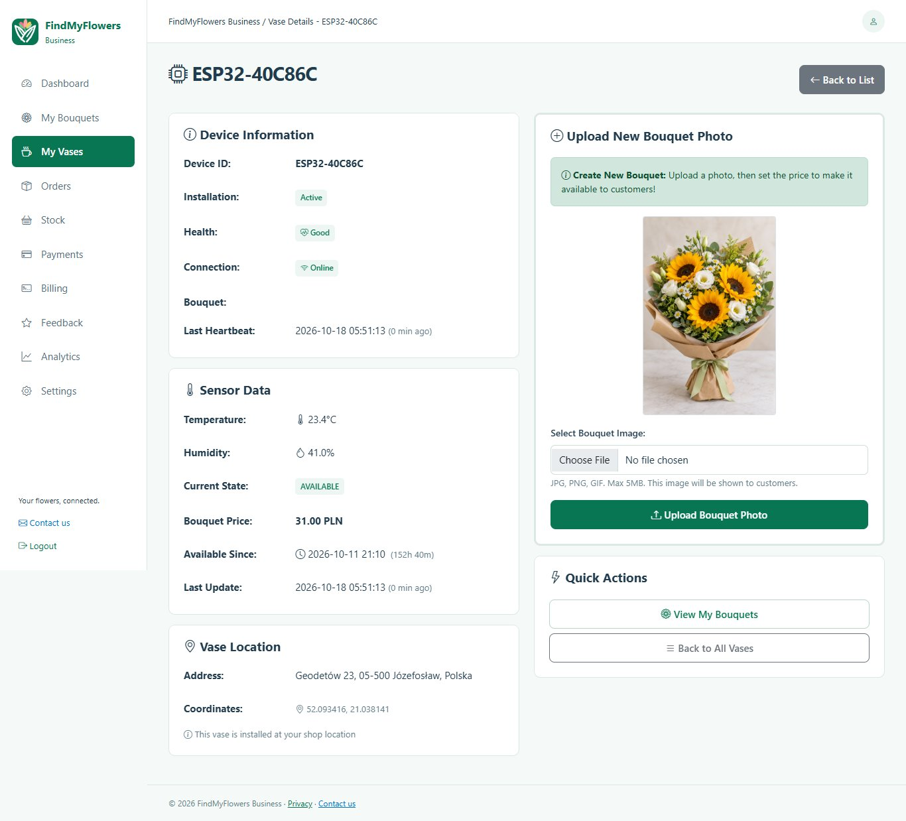
Замовлення ваз
Замовити розумні вази
З Мої вази → Замовити нові вази, оберіть кількість (1–10 на замовлення), введіть адресу доставки й необов’язкові примітки та натисніть Оформити замовлення. Команда платформи перевіряє замовлення й надсилає обладнання. Тут оплата не стягується.
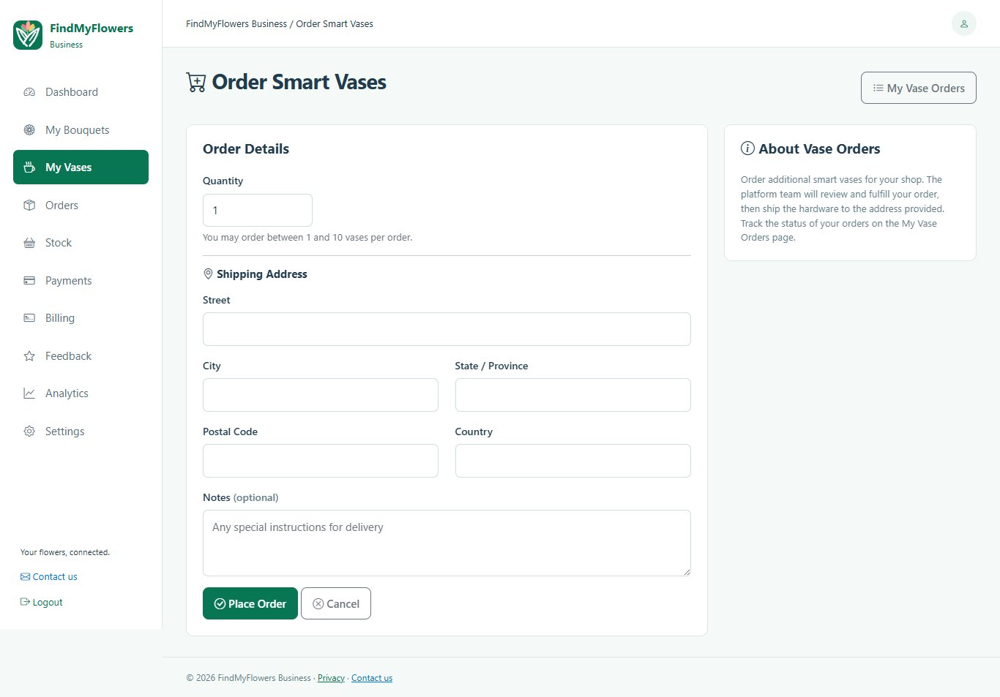
Мої замовлення ваз
Відстежує кожне замовлення ваз із датою, кількістю, статусом (Запитано → Підтверджено → Відправлено → Доставлено) і номером відправлення після відправки.
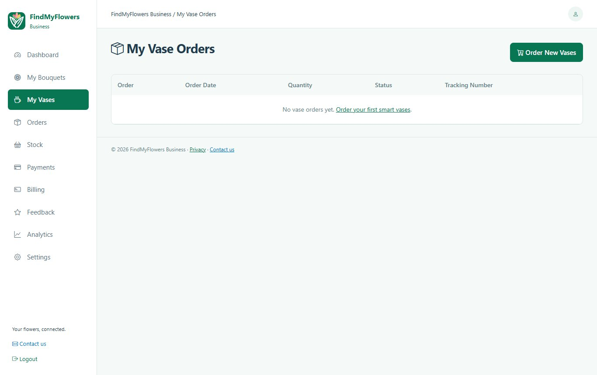
Керування замовленнями
Мої замовлення
Замовлення клієнтів зі статусом, станом оплати, кількістю позицій, сумою й датою. Шукайте серед завантажених замовлень або фільтруйте за статусом: Усі, Оплачено, Готується, Готово, У доставці, Завершено, Скасовано. Натисніть Переглянути , щоб побачити деталі.
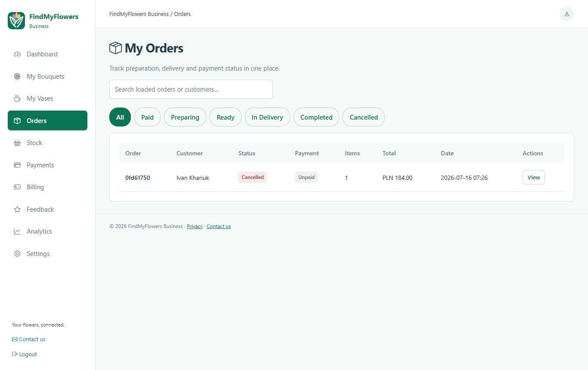
Деталі замовлення
Показує статус замовлення, клієнта, дату створення, суму й стан оплати та кожну позицію з ціною за одиницю й відгуком клієнта. Для активних замовлень панель Дії просуває замовлення далі: Прийняти й підготувати → Готове до самовивозу або Почати доставку → Позначити як доставлене, або Скасувати замовлення.
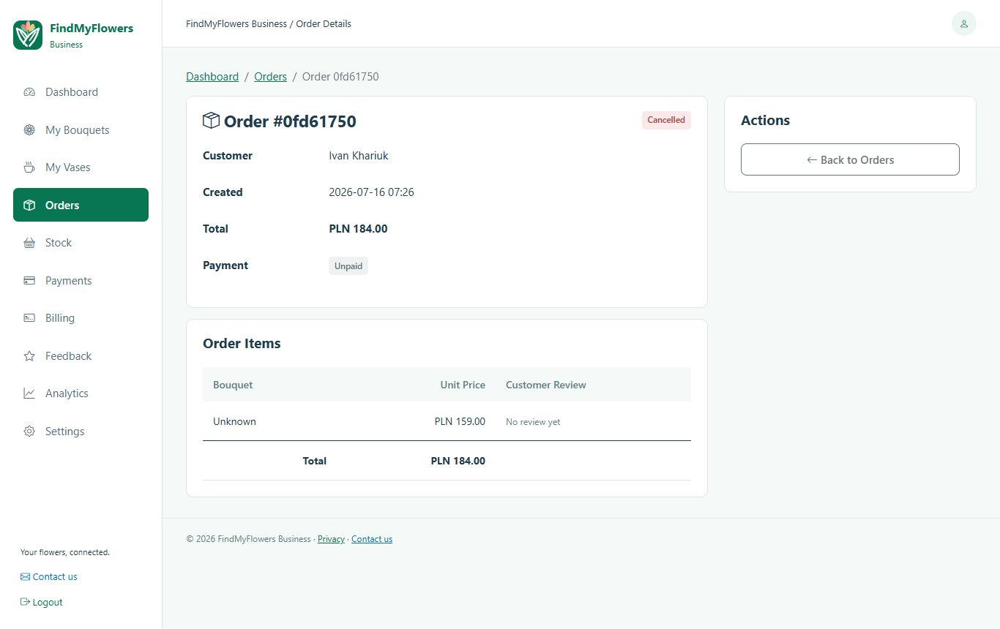
Склад НОВЕ
Огляд складу
Квіти, зелень і матеріали на складі. Плитки рахують усі позиції, позиції з низьким залишком і відсутні, а також загальну вартість складу за останньою собівартістю одиниці. Шукайте й фільтруйте за видом (квітка, зелень, матеріал) і статусом, за бажанням з архівними. Таблиця показує кількість, поріг сповіщення, статус, собівартість одиниці, вартість, постачальника й останню поставку; натисніть Керувати в рядку, щоб відкрити позицію. Скористайтеся Додати позицію і Активність угорі.
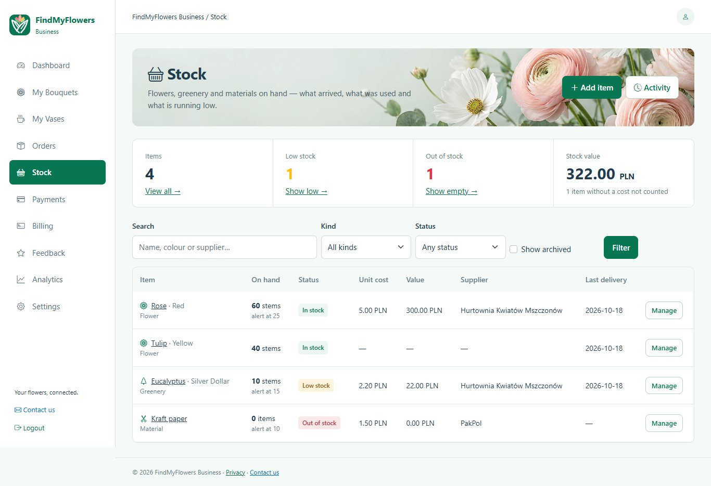
Додати позицію на склад
Оберіть вид, введіть назву, необов’язковий колір, одиницю обліку (квіти й зелень завжди рахуються в стеблах), необов’язкову собівартість одиниці, поріг сповіщення про низький залишок, постачальника й примітки, а також кількість у наявності зараз (записується як початковий залишок). Натисніть Додати на склад.
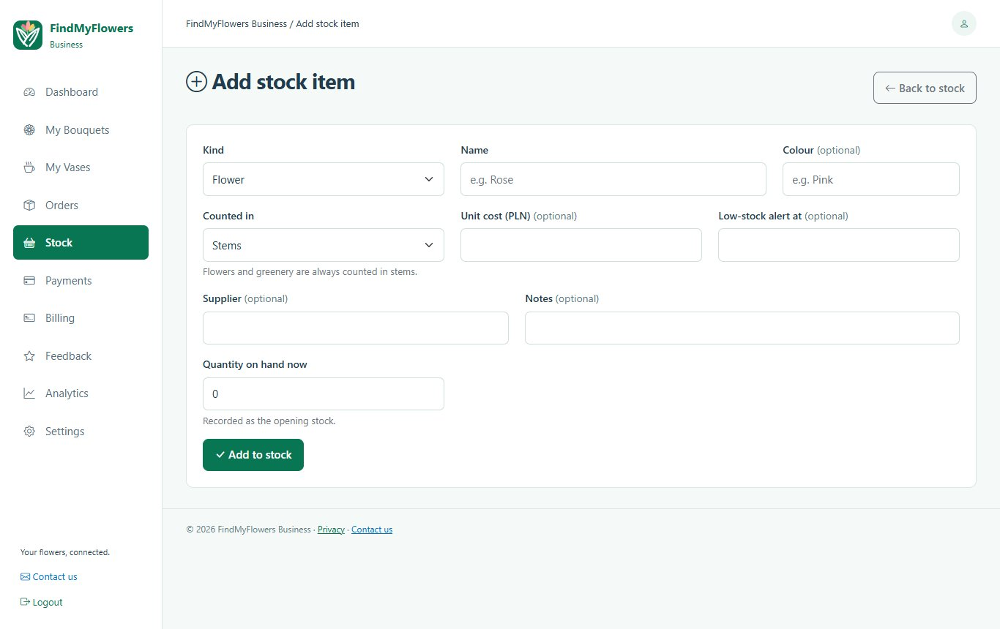
Деталі позиції складу
Показує кількість, статус, собівартість одиниці, вартість, поріг сповіщення й останню поставку. Оновити склад записує, що сталося: Надійшло (поставка — її собівартість стає поточною), Використано, Списано або Інвентаризація (перерахунок, що встановлює точну кількість), з необов’язковою приміткою. Редагувати змінює дані позиції, а Архівувати позицію приховує її. Історія показує кожну зміну з кількістю після неї.
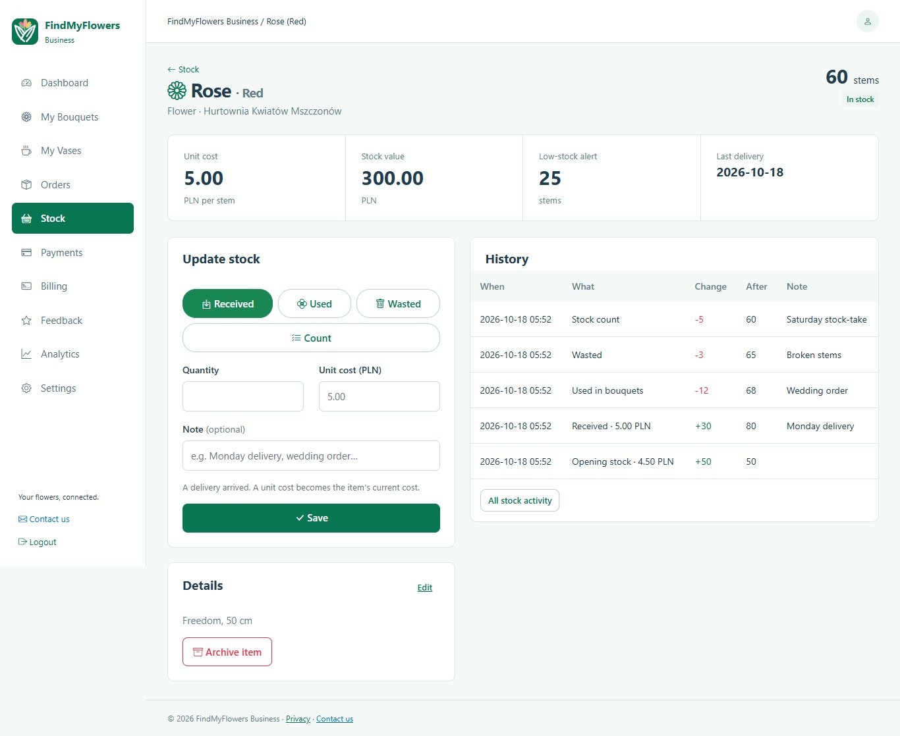
Активність складу
Усі зміни складу для всіх позицій, від найновіших: коли, яка позиція, що сталося, зміна й кількість після неї, з примітками.
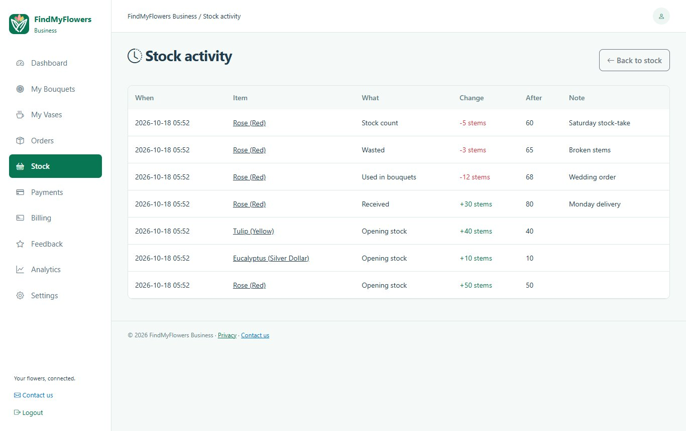
Порахувати склад із фото
На сторінці Склад, натисніть Порахувати склад із фото й додайте 1–5 фото робочого столу або холодильної камери. ШІ оцінює, скільки у вас кожної позиції, і пов’язує розпізнане з позиціями складу. Перевірте список: кожен рядок показує фото або значок виду, зразки кольорів, кількість в обліку (Зараз) і пораховану кількість зі зміною. Рядки, позначені Перевірте , — ті, у яких ШІ був найменш упевнений. Пов’яжіть нерозпізнані рядки з позицією (або скористайтеся Створити позицію), виправте кількість, зніміть позначку з того, що не хочете змінювати, і натисніть Застосувати залишки. До цього склад не змінюється; позначені рядки записуються як інвентаризація в Активність складу за один раз. Використовує одне з місячних розпізнавань фото складу.
ШІ-флорист: почати з мого складу
У майстрі ШІ-флорист, натисніть Почати з мого складу. Ліворуч — позиції складу картками з фото, значком виду (квітка, листок або стрічка), зразками кольорів, кількістю й вартістю; фільтруйте за видом, кольором або текстом. Перетягніть картку до Стартовий набір праворуч — або скористайтеся кнопкою Додати , натисніть Enter на вибраній картці чи позначте кілька карток і натисніть Додати вибране. Кожна картка додає до 5 стебел (1 для матеріалів); повторне додавання додає ще, а кількість можна змінити в наборі. Кількість, більша за наявну, показує попередження, але дозволена. Набір зберігається автоматично, тож можна піти й повернутися. Натисніть Використати як мій склад , щоб перевірити рядки в таблиці (фото, значки виду й зразки кольорів; порожні ціни показують вартість зі складу або запам’ятовану ціну, яка буде використана), потім підтвердьте й оберіть дизайн. Підрахунок складу з фото тепер на сторінці «Склад».
ШІ-флорист: відтворити букет
У майстрі ШІ-флорист, натисніть Відтворити букет із фото — наприклад, коли клієнт надсилає фото букета, який йому подобається. Додайте 1–5 фото цього одного букета й натисніть Аналізувати букет (використовує одне з місячних розпізнавань фото). Майстер перелічує, з чого, схоже, складається букет, і зіставляє кожну позицію з вашим складом за оцінкою збігу: На вашому складі, Замало на складі і Бракує. Кількість стебел приблизна. Скористайтеся Змінити у рядку, щоб обрати іншу позицію складу, позначити її як Немає на моєму складі, або змінити потрібну кількість. У розділі Купити для цього букета, Копіювати список або Завантажити CSV дає список відсутніх позицій (замовлення в постачальників з’явиться пізніше). Натисніть Використати зіставлені позиції , щоб створювати рецепти з того, що є, — один рецепт близький до фото, а інший пропонує найкращі заміни. Тут нічого не змінює залишків.
ШІ-флорист: калькулятор вартості
У майстрі ШІ-флорист, натисніть Скільки мені коштує цей букет?. Додайте 1–5 фото одного готового букета й необов’язкову примітку (наприклад «приховано: 3 евкаліпти всередині»), потім натисніть Аналізувати й оцінити (використовує одну з місячних оцінок вартості). Кожен рядок показує елемент, відповідну позицію складу, ймовірну кількість із мін./макс. для прихованих стебел і використану ціну: вартість зі складу, запам’ятована ціна, ваша ціна або бракує ціни. Змініть позицію складу, кількість або ціну, додайте пропущену позицію в останньому рядку чи позначте Видалити, потім натисніть Зберегти й перерахувати; позначте Запам’ятати , щоб зберегти ціну на наступний раз. Вартість показує квіти, матеріали, роботу й накладні витрати з ваших Налаштувань витрат, суму з діапазоном і рекомендовану ціну за цільової маржі (задається в налаштуваннях витрат, за замовчуванням 60 %). Введіть ціну продажу, щоб побачити маржу. У розділі Що далі? можна Списати зі складу для букета, який ви вже зробили, Відкрити в ШІ-флористі , щоб створити схожі рецепти, установити ціну одного з букетів або Друкувати підсумок. Склад змінюється лише тоді, коли ви натискаєте «Списати».
Платежі
Платежі
Платіжна активність за останні 30 днів: оплачені замовлення, невдалі платежі, повернення, спори, частка повернень і способи оплати. Таблиця показує замовлення, що потребують уваги щодо коштів, із фільтром Потрібна повторна спроба повернення, Спірне, Повернення не вдалося і Розбіжність звірки.
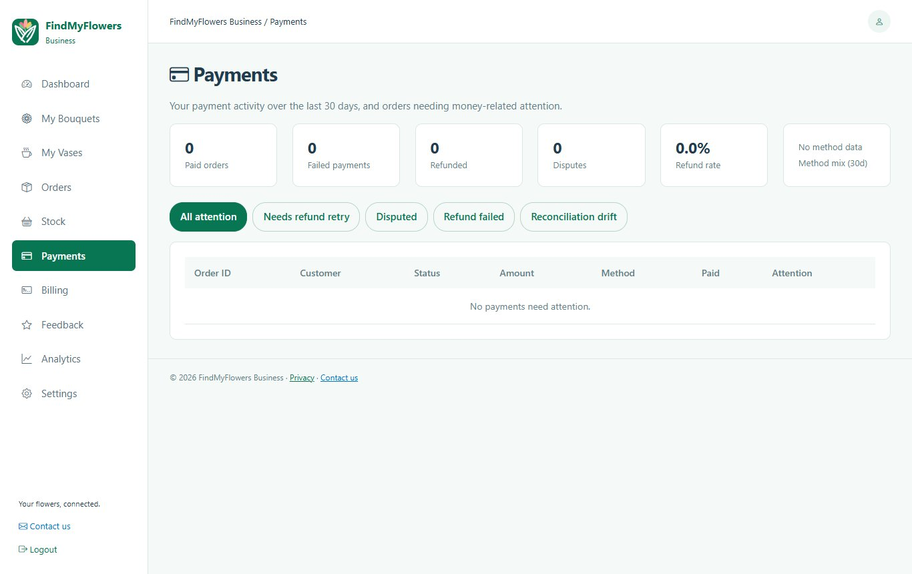
Відгуки
Відгуки клієнтів
Відгуки, залишені клієнтами до замовлень. Оберіть Мін. оцінка й натисніть Фільтрувати; Скинути очищує його.
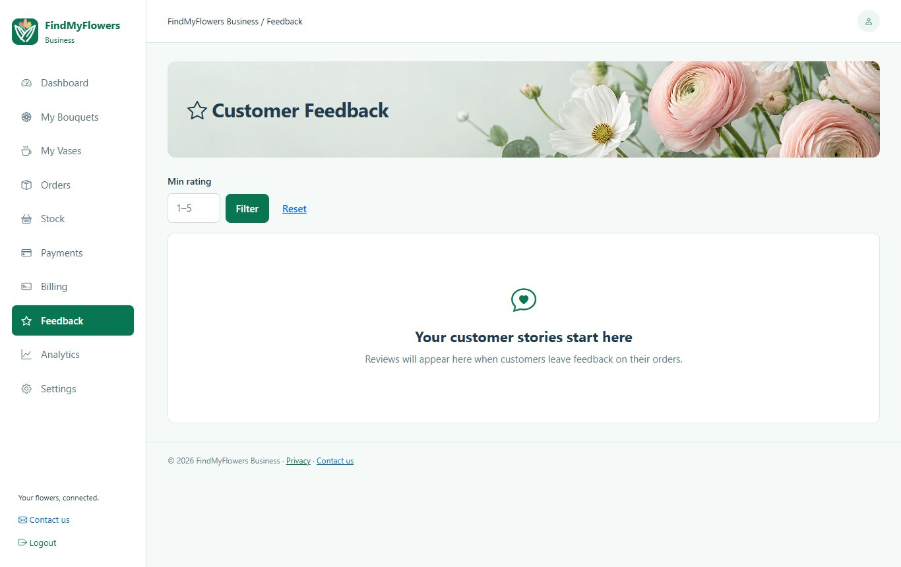
Аналітика
Панель аналітики
Результати бізнесу: загальний дохід, кількість замовлень, продані букети, середня вартість замовлення, вази онлайн із зареєстрованих і доступні букети.
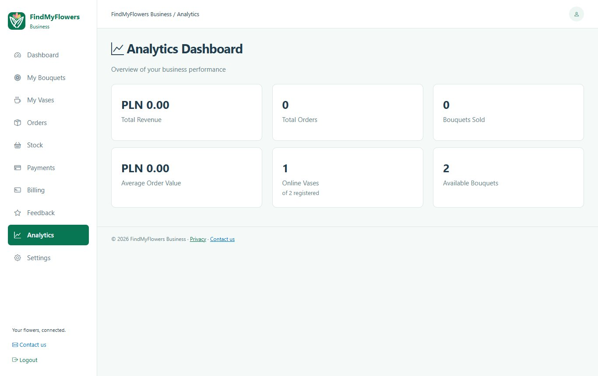
Налаштування
Налаштування профілю
Обліковий запис для входу показує ел. пошту для входу й чи її підтверджено. Вона використовується для входу, підтвердження й скидання пароля та не залежить від контактної пошти компанії. Використати ел. пошту для входу копіює її в поле контактної пошти.
Інформація про компанію: редагуйте назву компанії, опис, контактну ел. пошту (її бачать клієнти) і телефон, потім натисніть Зберегти зміни. Перегляд компанії показує зміни до збереження. Швидкі посилання ведуть до годин роботи й назад на панель.
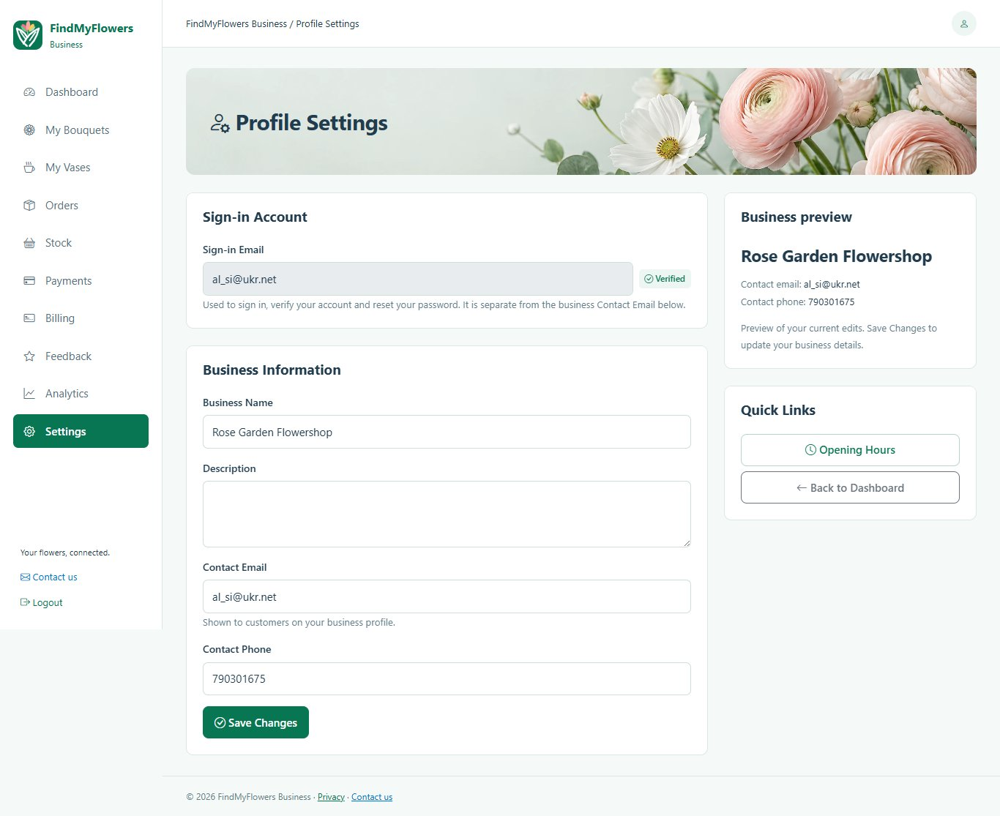
Години роботи
Установіть тижневий розклад: позначте дні роботи й оберіть час відкриття та закриття. Копіювати понеділок на робочі дні заповнює вівторок–п’ятницю одним кліком. Натисніть Зберегти розклад.
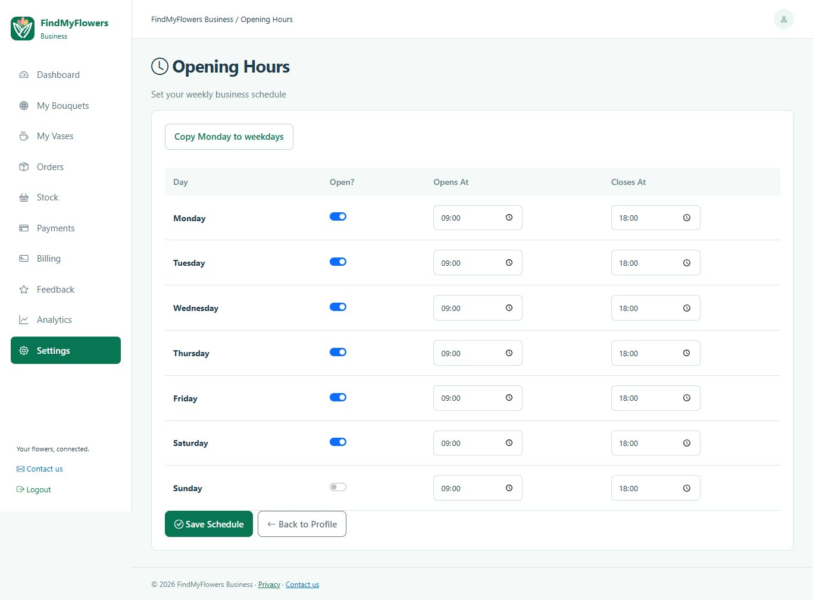
Профіль і налаштування
Сторінка Більше (переважно для малих екранів) веде до: Налаштування профілю, Години роботи, Склад, Мої вази, Замовити розумні вази, Замовлення ваз, Аналітика, Платежі, Оплата й підписка, Відгуки, Зв’язатися з нами й Вийти.
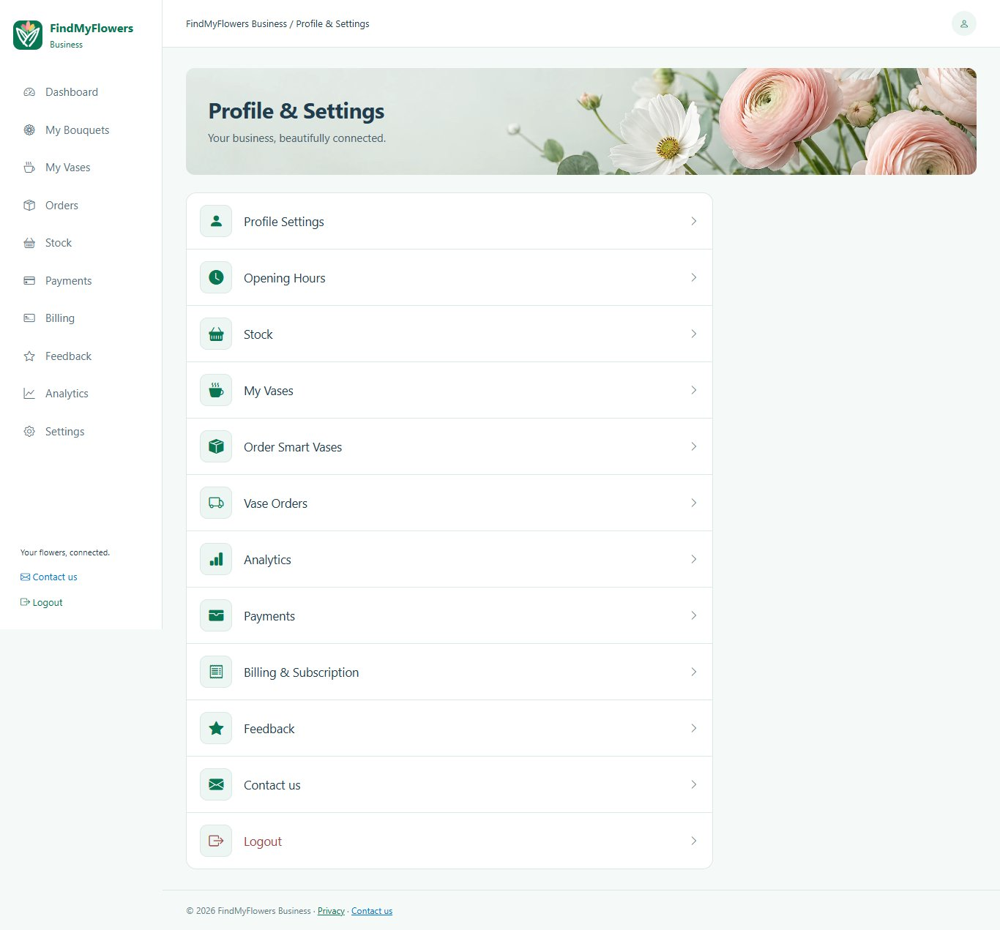
Оплата й підписка
Огляд підписки
Показує план платформи, статус, відлік пробного періоду, дату наступної оплати й збережений спосіб оплати, з можливістю змінити спосіб оплати або скасувати (доступ триває до кінця оплаченого періоду). Якщо підписки немає, як у цього демо-продавця, сторінка про це повідомляє й пропонує Звернутися до підтримки і Переглянути платежі за букети.
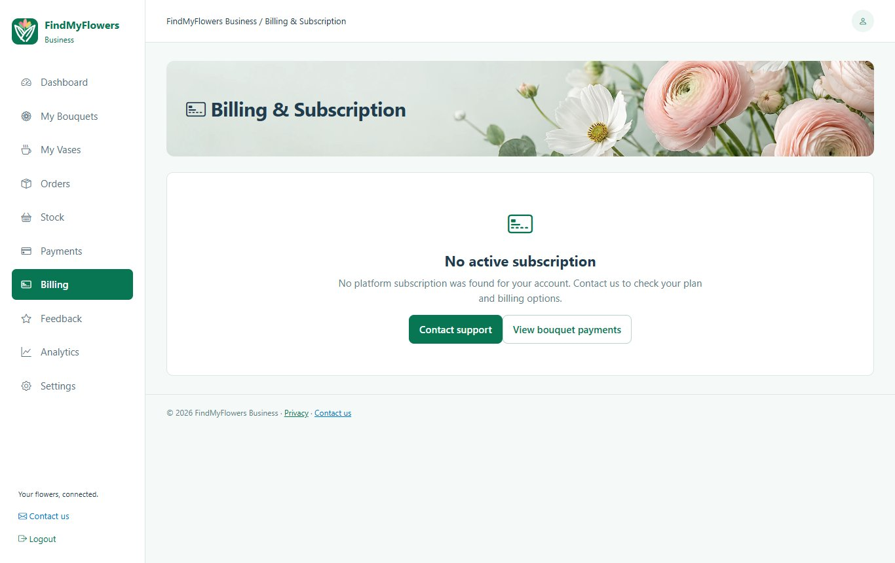
Спосіб оплати й платіжна адреса
Додайте або замініть картку для підписки. Дані картки потрапляють прямо в захищену форму Stripe і ніколи не проходять через сервери FindMyFlowers, а під час пробного періоду з картки нічого не списується. Натисніть Зберегти картку. Збережену картку показано вгорі з кнопкою Замінити картку . Форму Платіжна адреса зберігають окремо кнопкою Зберегти платіжну адресу.
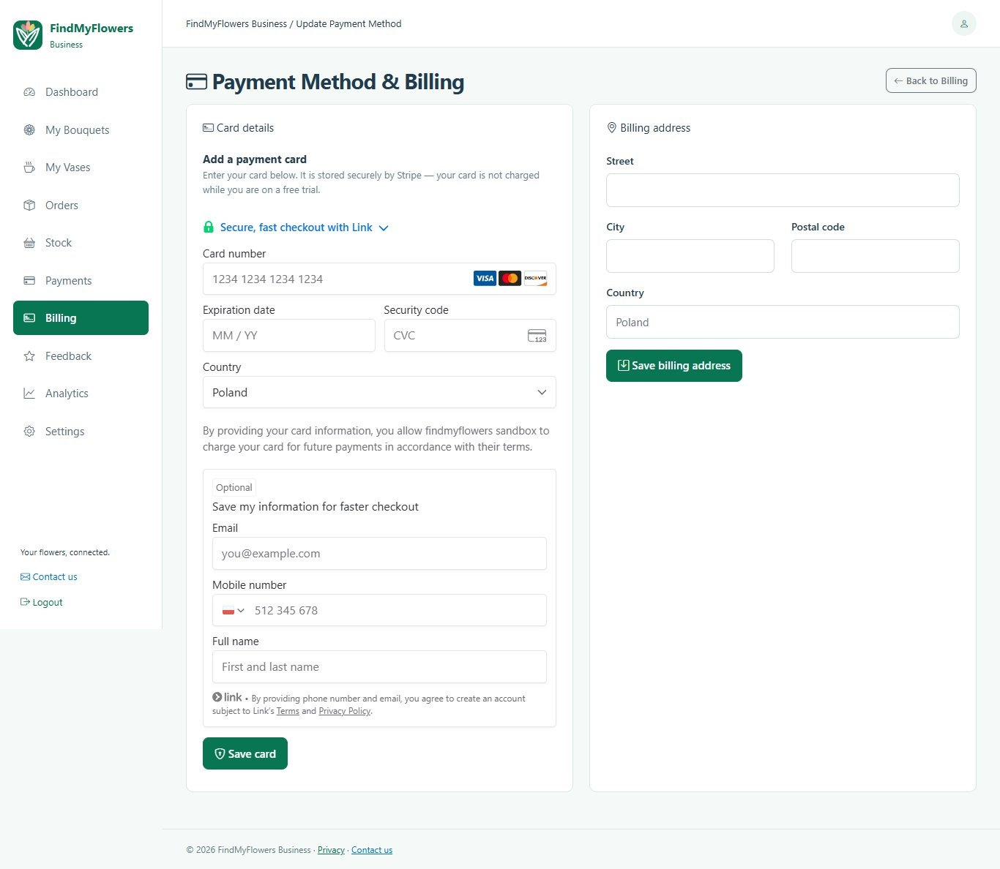
Підтримка
Зв’язатися з нами
Зв’язатися з нами (у бічній панелі або нижньому колонтитулі) відкриває форму: ваша пошта для відповіді, тема й повідомлення. Пройдіть перевірку Підтвердьте, що ви людина й натисніть Надіслати, або скористайтеся або скористайтеся власним поштовим застосунком , щоб написати зі своєї поштової програми.
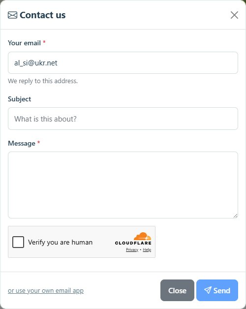
Довідка НОВЕ
Натисніть Довідка у бічній панелі (або в Більше на телефоні), щоб відкрити цей посібник у новій вкладці, або ? у верхній панелі, щоб відкрити його в розділі для поточної сторінки. До документації ви входите сеансом порталу, тож другого входу немає; якщо сеанс завершився, документація попросить увійти й продовжить із того самого розділу. Продавці бачать у документації лише посібники для продавців.
Запити на букети
Запити на букети
Натисніть Запити на букети у бічній панелі, щоб побачити, чого хочуть клієнти поблизу: фото-зразки, примітку, бюджет, привід, бажаний час і доставку або самовивіз. Запити з’являються, коли вони у вашому радіусі обслуговування навколо крамниці (задається в налаштуваннях запитів), а підписка на платформу активна. Розташування показано лише як район і приблизну відстань — адреса, точна мітка й ім’я клієнта приховані, доки клієнт не оплатить. Кожна картка показує, скільки пропозицій уже надіслано й коли закриваються пропозиції.
Надіслати пропозицію
Відкрийте запит і заповніть Зробити пропозицію: ціна (zł, з ПДВ), вартість доставки (порожньо, якщо включено), коли буде готово й — для доставки — до коли прибуде, а також примітки для клієнта (наприклад, заміни). Натисніть Надіслати пропозицію. Пропозицію можна оновити (кожна зміна — нова версія, яку бачить клієнт), додати до 5 зображень або Відкликати її. Час до 2 годин пізніше, ніж у запиті, дозволено й позначено пізніше, ніж у запиті. Натисніть Відтворити з ШІ-флористом , щоб відкрити фото із запиту у відтворенні ШІ-флориста (що є на складі, чого бракує, орієнтовна вартість і чернетка примітки до пропозиції для копіювання). Якщо клієнт змінить запит, вашу пропозицію буде позначено клієнт змінив запит.
Індивідуальні замовлення
Коли клієнт прийме вашу пропозицію, у нього є 30 хвилин на оплату. Після оплати запит показує Ваше індивідуальне замовлення з адресою, отримувачем, посиланням на мапу й терміном. Просувайте його кнопками етапів (Виконується, Готово, Доставляється, Доставлено або Забрано). Якщо потрібно більше часу, скористайтеся Потрібно більше часу? , щоб запропонувати новий час із причиною; клієнт може прийняти його або — якщо він пізніший більш ніж на годину — скасувати з повним поверненням коштів; пропозицію без відповіді приймають через 30 хвилин. Замовлення також з’являється в Замовленнях з позначкою Індивідуальне; його статус змінюється лише на сторінці запиту. Ви отримуєте сповіщення перед часом початку, коли замовлення не готове і коли воно запізнюється.
Налаштування запитів і скринька
Налаштування запитів задають радіус обслуговування (1–50 км), час підготовки, сповіщення про нові запити, тихі години й мінімальний бюджет. Скринька показує всі сповіщення про запити — нові запити, прийняті й відхилені пропозиції, оплати, зміни часу й запізнення — з кнопкою Позначити все як прочитане.
Продаж лише онлайн
Продаж лише онлайн
Оберіть Лише онлайн, з доставкою клієнтам , якщо у вас немає прилавка й самовивозу: на кроці реєстрації Як ви продаєте?, або пізніше в Налаштування у розділі Як ви продаєте?. Продавці лише онлайн не використовують розумні вази, тож меню Мої вази , плитки ваз на панелі й підказки щодо замовлення ваз приховано. Перейти на продаж лише онлайн можна, коли у вас немає розумних ваз (спершу поверніть їх); повернутися до продажу в крамниці з вазами можна завжди.
Додати букет онлайн
Натисніть + у верхній панелі або Додати букет онлайн у «Моїх букетах». Додайте чітке фото готового букета (клієнти не побачать його наживо), назву, ціну в zł, кількість днів свіжості (1–3) і квіти в ньому, потім натисніть Виставити з доставкою. Букет одразу з’являється на мапі клієнтів як Лише доставка, а ваше розташування показано лише приблизно. Це один фізичний букет: він продається один раз. З рецепта ШІ-флориста Виставити онлайн заповнює форму за вас.
Онлайн-оголошення й замовлення
«Мої букети» позначають онлайн-оголошення міткою Онлайн · лише доставка і зворотним відліком. Оголошення зникає з мапи, коли закінчується його свіжість (щонайпізніше через 3 дні), якщо раніше не продасться. Скористайтеся Змінити ціну , щоб змінити ціну, і Зняти оголошення , щоб прибрати його з мапи (неможливо, поки клієнт платить). Замовлення онлайн-оголошень завжди доставляються: просувайте їх через Готується, У доставці і Доставлено у «Замовленнях»; кроку Готове до самовивозу немає, як і вази для скидання.
Наскільки впевнений ШІ?
Що означає мітка
Усюди, де ШІ розпізнає квіти з ваших фото (ШІ-флорист → Відтворити букет, перевірка складу з фото й Склад → Порахувати склад із фото), кожен рядок показує, як часто подібні відповіді виявлялися правильними, коли флористи їх перевіряли. Власне «впевнений на 90 %» від ШІ більше не показується: він казав так майже про все. Мітка має чотири стани: Зазвичай правильно · 41 перевірка, Перевірте · правильно 7 з 10 разів, Часто помиляється · перевірте і Нове: замало перевірок. Наведіть на неї, щоб побачити, чи вона з ваших перевірок, чи від флористів усієї платформи. Рядки, у яких ШІ часто помиляється, показуються першими, ніколи не пов’язуються зі складом автоматично, а часто неправильна кількість змушує калькулятор вартості показувати ширший діапазон. Це історія точності, а не гарантія.
Правильно, неправильно або не впевнені
Під кожним розпізнаним рядком натисніть ✓ Правильно , коли ШІ правильно назвав квітку, ✗ Неправильно , щоб сказати, що це насправді (оберіть із назв складу або списку, напр. Scabiosa замість Astrantia) або Немає в букеті , коли її там узагалі немає, і ? , коли ви не впевнені. Ідеться про те, що це за квітка, а не про те, чи вона у вас є: Немає на моєму складі у розділі Змінити — окремо. Інший колір або сорт усе одно вважається правильним для квітки; просто виправте це в рядку. Підтвердження списку (Використати зіставлені позиції, Підтвердити склад, Застосувати залишки, збереження оцінки вартості) теж вважається легкою перевіркою залишених рядків. Ваші відповіді запам’ятовуються: виправлення, дане двічі, стає підказкою для наступних фото. Кожна оцінка перезавантажує список, тож оцінюйте до зміни кількості.
Чим ми ділимося
За замовчуванням ваші перевірки допомагають й іншим крамницям: передаються лише анонімні лічильники за видом квітки (наприклад, «гвоздики: перевірено 12 разів, правильно 9»), ніколи назва крамниці, фото, примітки, ціни чи склад, а лічильник використовується, лише коли його внесли щонайменше три крамниці. Ваші виправлення й підказки залишаються у вашій крамниці. Щоб припинити ділитися, відкрийте ШІ-флорист → Фірмовий стиль і вимкніть Допоможіть покращити розпізнавання для всіх; тоді ваші перевірки налаштовують мітки лише для вашої крамниці, а дані платформи ви й далі бачите.
Що означають зображення
Три зображення в кожному рядку
У ШІ-флорист → Відтворити букет і в калькуляторі вартості кожен рядок може показувати до трьох маленьких зображень. На вашому фото — фрагмент вашого фото, про який ідеться ШІ, — натисніть його, щоб побачити все фото з позначеною квіткою. Схоже на — еталонне фото квітки, яку назвав ШІ (або її сорту, напр. евкаліпт із насінням), щоб порівняти одним поглядом. Ваш склад — фото позиції складу, з якою її зіставлено. Рядок без фрагмента фото показує піктограму квітки/зелені/матеріалу: ШІ не зміг її вказати (наприклад, приховані наповнювачі). Фрагменти ваших фото приватні для вашої крамниці й видаляються разом із дизайном, як і самі фото.
«Може бути», схожі квіти й ваш склад
Може бути: Евкаліпт 'Seeded' з’являється, коли ШІ назвав лише квітку, а вона має дуже поширений сорт. Натисніть Використати , щоб перейменувати рядок; його знову зіставлять зі складом, і це враховується як «ШІ був правий». Коли зіставлення зображень увімкнено, ви також можете побачити ШІ каже Astilbe, а фото схоже на амарант: зображення більше схоже на іншу квітку, ніж на названу ШІ. Натисніть Це амарант , щоб перейменувати (так ми знаємо, що ШІ помилився), або Це Astilbe , щоб підтвердити ШІ. На вашому складі може бути: Троянда 'Freedom' означає, що ваше фото складу схоже на цей рядок, хоча назва не збіглася, — натисніть Використати , щоб пов’язати. Без вашого дотику нічого не змінюється, а Скасувати під перейменованим рядком повертає назву від ШІ. У Що це? підказки тепер спершу показують назви з атласу англійською й польською, а потім назви з вашого складу.
Звідки беруться еталонні фото
Фото «Схоже на» беруться з нашого атласу приблизно 150 зрізаних квітів і зелені. Ми беремо їх лише з Wikimedia Commons та iNaturalist за ліцензіями, що дозволяють комерційне використання (CC0, CC BY, CC BY-SA), або це наші власні фото, і кожне спершу перевіряє наша команда. Наведіть на еталонне фото, щоб побачити автора й ліцензію, і натисніть, щоб відкрити джерело. Повний список авторів — у розділі Автори зображень в нижньому колонтитулі сторінки.